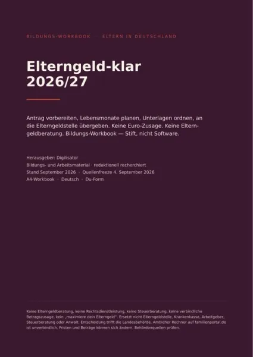

Berufswahl im Zeitalter von KI und Robotik – 60 Berufe im Zu
Produktprofil · Marktplatz-Daten 2026-10-13 · Verkaufsseiten-Recherche 2026-10-13 · Kategorien: Family & Children, Profession & Job, Education
- Berufswahl im Zeitalter von KI und Robotik – 60 Berufe im Zu ist ein/e E-Book in Family & Children und Profession & Job, vertrieben über den Digistore24-Marktplatz von Anbieter MarkusGerbig, gelistet seit 2026-09-29.
- Listenpreis $31.34; Digistore24 meldet — Checkout-Konversion, — Stornierungsquote und 40 % Affiliate-Provision.
- Verdienst pro Verkauf (Affiliate): $12.53 (Anbieter-seitige Statistik, keine Prognose).
Interesse an Berufswahl im Zeitalter von KI und Robotik – 60 Berufe im Zu? Aktueller Preis, Boni und Garantiebedingungen finden Sie auf der offiziellen Seite des Anbieters:
Offizielle Verkaufsseite ansehen
Affiliate-Link (Werbung) — wir verdienen ggf. eine Provision, ohne Mehrkosten für Sie.
Marktplatz-Daten
| Produkttyp | E-Book |
|---|---|
| Preis | $31.34 (Single payment) |
| Affiliate-Provision | 40 % |
| Garantie/Rückgabe | Laut Verkaufsseite des Anbieters — vor dem Kauf auf der offiziellen Seite prüfen |
| Anbieter | MarkusGerbig (gelistet seit 2026-09-29) |
| Marktplatz-Statistiken* | Checkout-Konversion — · Stornoquote — · Verdienst/Verkauf $12.53 |
* Anbieter-seitige Statistiken von Digistore24; sie hängen von der Traffic-Qualität ab und sind keine Prognose.
Marktplatz-Beschreibung des Anbieters
Berufswahl im Zeitalter von KI und Robotik – 60 Berufe im Zukunftscheck Verdiene 40 % Provision pro Verkauf mit einem digitalen Ratgeber zu einem Thema, das Jugendliche und Eltern zunehmend beschäftigt: Welche Berufe haben in einer Arbeitswelt mit KI und Robotik Zukunft? Das E-Book richtet sich vor allem an Jugendliche vor der Berufswahl und deren Eltern. 60 Berufe aus Handwerk, Gesundheit, IT, Büro, sozialen Bereichen, Industrie, Logistik und Mobilität werden verständlich betrachtet. Bei jedem Beruf wird gezeigt, welche Aufgaben KI und Robotik übernehmen oder unterstützen können und wo menschliche Fähigkeiten weiterhin entscheidend bleiben. Deine Vorteile als Affiliate: klare Zielgruppe, aktuelles Zukunftsthema, 40 % Provision, digitales Produkt ohne Versand, sofortige Auslieferung und automatische Verkaufsabwicklung über Digistore24. Ideal zur Bewerbung über Instagram, TikTok, Pinterest, Facebook, Blogs und Webseiten rund um Familie, Schule, Ausbildung und Berufsorientierung.
Von der Verkaufsseite des Anbieters
Seitentitel: Berufswahl
Hauptüberschrift
29,99€
Abschnitts-Überschriften
- Your web browser is old and not fully supported.
- For a better experience, please use a modern browser:
Einstiegstext
KI schreibt Texte. Roboter arbeiten in Fabriken. Fahrzeuge fahren zunehmend automatisiert. Software analysiert Daten in Sekunden.
Und mittendrin stehen Jugendliche vor einer der wichtigsten Entscheidungen ihres Lebens:
Eine Ausbildung im Handwerk? Ein Beruf im Büro? Pflege oder Medizin? IT? Industrie? Logistik? Oder doch ein Studium?
Die Berufswahl war noch nie einfach. Doch heute kommt eine völlig neue Frage hinzu:
Fragen, die die Verkaufsseite beantwortet
- Welchen Beruf soll ich wählen?
- Was können KI und Robotik übernehmen – und welche Aufgaben bleiben beim Menschen?
CTA-Buttons: „Startseite"
Recherche-Methode: rohes HTML · 805 Wörter · Qualität: rich · recherchiert am 2026-10-13. Vollständige Recherche-Datei (MD) ↗
Wie Produkte dieser Art geliefert werden
Allgemeiner Hinweis zu diesem Produkttyp (keine anbieterspezifische Anleitung): E-Books auf Digistore24 werden als digitaler Download geliefert (meist PDF/EPUB): direkt nach dem Checkout erhalten Sie einen Downloadlink oder Mitgliederzugang und können auf jedem Gerät lesen. Für die genaue Anwendung von Berufswahl im Zeitalter von KI und Robotik – 60 Berufe im Zu sind die offizielle Verkaufsseite und die enthaltenen Materialien maßgeblich.
Gut zu wissen
- Keine Garantie-Formulierung in unserer Recherche gefunden — bestätigen Sie das Rückgabefenster auf der offiziellen Seite, bevor Sie kaufen.
- Marktplatz-Zahlen (Preis, Provision, Konversion, Stornoquote) — Quelle: offizielle Digistore24-Marktplatz-API (Affiliate-Sicht), Stand 2026-10-13. Gegenprüfung: Marktplatz-Suche nach Produkt-ID 738823.
- Verkaufsseiten-Zitate — Quelle: https://www.mg-wissen.de/berufswahl/, abgerufen 2026-10-13 (Methode: rohes HTML). Verify: offizielle Seite öffnen.
- Garantie / Rückgabe — vom Anbieter festgelegt; vor dem Kauf auf der Verkaufsseite bestätigen.
- Nicht von uns geprüft: Produktqualität, Ergebnisse, Testimonials — kein Praxistest für dieses Listing durchgeführt.
Häufige Fragen zu Berufswahl im Zeitalter von KI und Robotik – 60 Berufe im Zu
Antworten aus dem Marktplatz-Snapshot (2026-10-13) und der Verkaufsseiten-Recherche (2026-10-13); Anbieteraussagen sind inline gekennzeichnet.
Was ist Berufswahl im Zeitalter von KI und Robotik – 60 Berufe im Zu?
Berufswahl im Zeitalter von KI und Robotik – 60 Berufe im Zu ist ein Angebot des Typs „E-Book" im Digistore24-Marktplatz, Anbieter: MarkusGerbig, gelistet seit 2026-09-29. Eingepflegt unter Familie & Kinder und Beruf & Karriere. Digistore24 wickelt Checkout, Lieferung und Rückgaben ab.
Wie viel kostet Berufswahl im Zeitalter von KI und Robotik – 60 Berufe im Zu?
Der Digistore24-Marktplatz listet es für $31.34 (single payment). Preise legt der Anbieter fest und können sich ändern — der Marktplatz-Eintrag oben zeigt den Schnappschuss; die offizielle Verkaufsseite zeigt den aktuellen Preis.
Gibt es eine Geld-zurück-Garantie für Berufswahl im Zeitalter von KI und Robotik – 60 Berufe im Zu?
Unsere Verkaufsseiten-Recherche hat keine explizite Garantie-Formulierung gefunden. Viele Digistore24-Produkte bieten 60 Tage Geld-zurück, aber das legt jeder Anbieter selbst fest — bestätigen Sie es auf der offiziellen Verkaufsseite, bevor Sie kaufen.
Ist Berufswahl im Zeitalter von KI und Robotik – 60 Berufe im Zu seriös?
Wir bewerten keine Seriosität — wir veröffentlichen überprüfbare Zahlen: Anbieter MarkusGerbig (gelistet seit 2026-09-29), Checkout-Konversion —, Stornoquote —, Affiliate-Verdienst/Verkauf $12.53 (alles Anbieter-seitige Marktplatz-Statistiken). Lesen Sie unsere 6-Punkte-Bewertungsmethode und entscheiden Sie anhand der Zahlen — oder diskutieren Sie Berufswahl im Zeitalter von KI und Robotik – 60 Berufe im Zu auf GitHub.
Wo kann ich Berufswahl im Zeitalter von KI und Robotik – 60 Berufe im Zu sicher kaufen?
Nur über die offizielle Verkaufsseite, die auf dieser Seite verlinkt ist (Checkout und Rückgaben laufen über Digistore24). Prüfen Sie dort Preis und Garantie vor der Bestellung. Der Link ist ein Affiliate-Link — der Kauf unterstützt diese Website ohne Mehrkosten für Sie.
Wie erhalte ich Berufswahl im Zeitalter von KI und Robotik – 60 Berufe im Zu nach der Zahlung?
Der Checkout läuft über Digistore24: Nach der Zahlung erhalten Sie Ihren Zugang oder Download per E-Mail und in Ihrem Digistore24-Kundenkonto. Lieferdetails für diesen Produkttyp: E-Books auf Digistore24 werden als digitaler Download geliefert (meist PDF/EPUB): direkt nach dem Checkout erhalten Sie einen Downloadlink oder Mitgliederzugang und können auf jedem Gerät lesen. Bei Problemen kann der Digistore24-Käufersupport Ihre Bestellung wiederherstellen.
Alle 50 Käuferfragen zu Familie & Kinder — das komplette Kategorie-FAQ.
Berufswahl im Zeitalter von KI und Robotik – 60 Berufe im Zu auf Reddit diskutieren
In Community-Threads vergleichen echte Käufer Erfahrungen. Wir verlinken Communities, keine einzelnen Posts — Threads verschwinden, Subreddits bleiben:
- r/arbeitsleben — deutschsprachige Community mit Diskussionen zu family & children.
- Reddit-Suche nach „Berufswahl im Zeitalter von KI und Robotik – 60 Berufe im Zu" — Live-Ergebnisse, von uns nicht beeinflusst.
- Top-„Erfahrungs"-Treffer dieses Jahr — selbst nach Aktualität filtern.
Passendes auf Amazon.de
Physische Produkte und Zubehör, die häufig zusammen mit Berufswahl im Zeitalter von KI und Robotik – 60 Berufe im Zu gekauft werden:
- Family & Children auf Amazon.de — Top-Ergebnisse, Amazon-Ranking.
- Bestseller: Family & Children — live Liste von Amazon, von uns nicht kuratiert.
Werbung: Als Amazon-Partner verdient DigistorePicks DE an qualifizierten Käufen (Partner-tag adminstorede-21). Amazon setzt eigene Preise und Provisionen (niedrige einstellige Prozente — weit unter den 30–75% der Digistore24-Anbieter). Amazon ist ein Convenience-Angebot für Sachprodukte, kein Ersatz für das digitale Produkt oben.
Ähnliche Angebote in Familie & Kinder

ZUGRIFF FÜR ALLE! Jede Person, die ein Arbeitsverhältnis mit Ihnen als Schulgemeinde hat sowie eine E-Mail-Adresse von Ihrer Schule, hat die Zufriffsberechtigun
Der Anti-Rosenkrieg-Kompass von AssetShield-X ist ein Programm, das Sie im Browser öffnen — auf Ihrem Rechner, Ihrem Tablet oder Ihrem Telefon. Wenn beide wolle

Jetzt ist AUSGEMOBBT! Schützen Sie Ihr Kind vor Mobbing - ganz nach dem Motto "Kinder schützen durch Stärken"!

Jetzt ist AUSGEMOBBT! Schützen Sie Ihr Kind vor Mobbing - ganz nach dem Motto "Kinder schützen durch Stärken"!
Weitere Angebote von MarkusGerbig
Medienzeit ohne Streit... ist der praktische Familienratgeber für alle, die weniger Diskussionen und mehr Klarheit bei der Bildschirmzeit wollen... Statt starre
Pubertät ohne Dauerstreit ist ein praxisnahes E-Book für Eltern von Teenagern, das 60 typische Konfliktsituationen greifbar macht und konkrete Lösungen anbietet
Berufswahl im Zeitalter von KI und Robotik – 60 Berufe im Zu ist auch gelistet in
Beruf & Karriere (507 Produkte) · Bildung (597 Produkte)
Ähnliche Preislage in Familie & Kinder

Ein visuell hochwertiges digitales Produkt für eine große, gesundheitsbewusste Zielgruppe: „Detox Smoothies für jeden Tag“ ist eine umfangreiche Rezeptesammlung

Ein umfangreiches digitales Rezeptpaket für alle, die im Alltag weniger Kohlenhydrate essen und trotzdem abwechslungsreich genießen möchten. Die „Low Carb &

Bildungs-Workbook PDF (73 Seiten DIN-A4, Deutsch, Stand September 2026) fr Eltern in Deutschland: ersten Elterngeld-Antrag oder Bezugsmonate (Basis / Plus / Par
![Das Herz eines Mannes erobern [Hörbuch]](../assets/products/25595.webp)
Empfehle unser einzigartiges Produkt zum Thema Beziehung mit einer hohen Kaufrate. Deine Vorteile: Exzellente Conversions : Profitiere von unseren hohen Convers
Ähnliche Suchanfragen
Wo Sie es sich ansehen können
Wo Sie es sich ansehen können
Aktuelle Preise, Garantie und Boni finden Sie auf der offiziellen Verkaufsseite:
Offizielle Verkaufsseite ansehen
Das ist ein Affiliate-Link (Werbung) — kaufen Sie darüber, verdienen wir ggf. eine Provision, ohne Mehrkosten für Sie.
Quellen & weiterführende Informationen
- Offizielle Verkaufsseite (aktueller Preis, Garantie, Boni): www.mg-wissen.de/berufswahl/ (Affiliate-Link)
- Öffentliche Digistore24-Produktseite: digistore24.com/product/738823
- Vollständige Recherche-Datei (Markdown, versioniert): content/products/60036-berufswahl-im-zeitalter-von-ki-und-robotik-60-berufe-im-zu.md
- Affiliate-Supportseite des Anbieters: www.mg-wissen.de/affiliate-material/
- Marktplatz-Kategorie: Familie & Kinder
Wie wir Produkte wie Berufswahl im Zeitalter von KI und Robotik – 60 Berufe im Zu bewerten
Sechs Prüfungen, ausschließlich mit offiziellen Marktplatz-Zahlen. Die vollständige Bewertungsmethode lesen · unsere Recherche-Standards & Kennzeichnung.
Fragen oder eigene Erfahrungen mit Berufswahl im Zeitalter von KI und Robotik – 60 Berufe im Zu?
Praxis-Tests veröffentlichen wir erst, nachdem wir ein Produkt selbst gekauft haben — aber Ihre Erfahrung hilft anderen Lesern: Diskussion zu Berufswahl im Zeitalter von KI und Robotik – 60 Berufe im Zu auf GitHub starten/verfolgen. Falsche Zahl gefunden? Korrektur melden — jede Seite zeigt ihre Datenstände, Korrekturen gelten für die ganze Website.